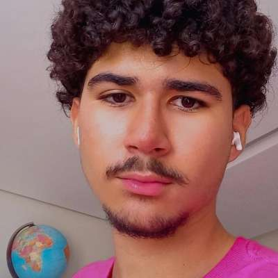

Olá,
sou Ygor Cardoso

Sobre Mim
Meu nome é Ygor Cardoso, tenho 17 anos, sou de Campo Grande (MS) e estou atualmente me graduando em Engenharia de Software no Instituto Infnet.
Habilidades
- HTML (Básico)
- CSS (Básico)
- JavaScript (Básico)
- Inglês (Avançado)
Projetos

Histórico Acadêmico
- Ensino Médio Completo (2023)
-
Graduação em Engenharia de Software (em andamento)
Instituto Infnet (2023-2026) -
Graduação em Administração (em andamento)
Universidade Federal do Mato Grosso do Sul (2023-2026)